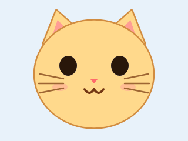

屏幕 320×240(此处 1.8 倍放大)。猫脸直接引用固件里的 data/characters/cat/cat_idle.gif(会动);中文字号对标 efontCN_16。
绿色(#3ee06e)与提醒状态的 LED 绿闪呼应。倒计时 = 距下次站立提醒。

信息最全:左上角当前时间,右上绿色胶囊倒计时。改动小,只在 GIF 上叠一条 22px 半透明栏,底部提问区不变。
不遮脸,猫最大。倒计时收进底部 59px 文字带右侧,左边保留提问入口。视觉最干净,实现也最简单(只改文字带的绘制)。
把它当「站立计时器」用:脸只留上半,下半整块给大字号倒计时(固件可用 Font7 数码管字体,只画数字不重绘脸)。提醒属性最强,但脸被裁掉一截。